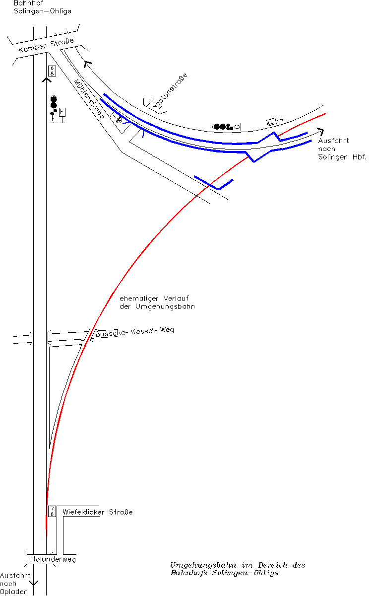

Krümelbahn
KrümelbahnDie Umgehungsbahn
Eine kuriose Bahnstrecke war die Umgehungsbahn.Bereits im Jahr 1877 tauchen Pläne für eine Schnellverbindung Köln - Solingen - Schwelm - Witten - Dortmund auf. Hierzu wollte man weitest gehenst bestehende Strecken benutzen, es wurden jedoch auch neue Streckenabschnitte benötigt.
Die erste Projektierung dieser Umgehungsbahn erfolgte 1911, im gleichen Jahr wurden auch die benötigten Gelder durch die Eisenbahnverwaltung bewilligt.
Der Bau erfolgte in zwei Abschnitten von 1914 bis 1918 und 1939 bis 1944.
1944 wird die Weiche zur Umgehungsbahn zerstört, die Strecke selbst ist nach Zeugenaussagen nur von Flakgeschützen benutzt worden, planmäßige Züge verkehrten hier nie; die Gleise werden direkt nach dem zweiten Weltkrieg wieder demontiert.
Der Abzweig der Umgehungsbahn von der Strecke Köln - Ohligs war am Hackhauser Busch in Höhe der heutigen Brücke in der Verlängerung der Wiefeldickerstraße. Den Verlauf der Bahnlinie entlang der Eisenbahner-Kleingartensiedlung "Bussche-Kessel-Weg" kann man auch heute noch gut erahnen.
Die Brücken wurden im August 1957 verschrottet, die Brückenreste am Bussche-Kessel-Weg wurden beim Bau der Viehbachtalstraße abgerissen.
Von der Umgehungsbahn übrig geblieben ist nur das riesige Viadukt an der Mühlenstraße, das 1985 umfassend renoviert wurde. Hier unterquerte die Strecke die Bahnlinie Ohligs - Solingen und mündete hinter dem Scharrenbergerdamm in die Strecke nach Solingen ein.
